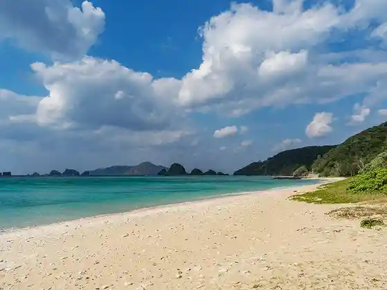
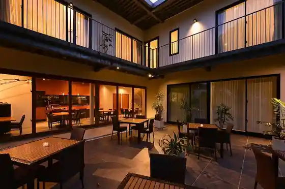
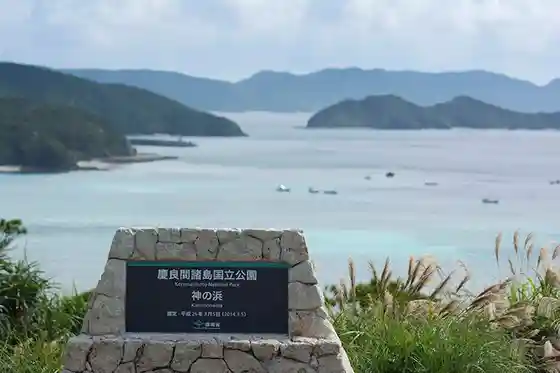
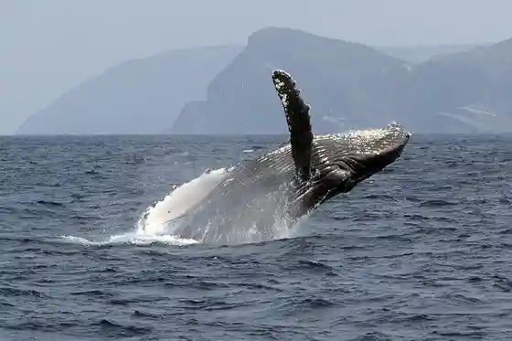

Ko Zamami Beach
Zamami, Okinawa · 098-987-2277 · Official / source link
A Makoto Beach
Zamami, Okinawa · 098-987-2320 · Official / source link

Kanusubazamami
Zamami, Okinawa · 098-996-3383 · Official / source link

Kami no Hama Lookout
Zamami, Okinawa · Official / source link

Zamami Hoeruotchingu Kyokai
Zamami, Okinawa · 098-896-4141 · Official / source link

Ippan Shadanhojin Zamami Tourism Association Ao no Yukuru Kan
Zamami, Okinawa · 098-987-2277 · Official / source link
Maririn no Zo
Zamami, Okinawa · 098-987-2277 · Official / source link
Daibinguchiimu Shio
Zamami, Okinawa · 098-987-3533 · Official / source link
Takatsuki Yama
Zamami, Okinawa · Official / source link
Onna Se no Saki Lookout
Zamami, Okinawa · 098-987-2277 · Official / source link
Keramakayakku Center
Zamami, Okinawa · 070-6488-7013 · Official / source link
Shu no Ga Ringu
Zamami, Okinawa · 098-987-2277 · Official / source link
Chishi Lookout
Zamami, Okinawa · 098-987-2277 · Official / source link
Inazaki Lookout
Zamami, Okinawa · Official / source link
Zamami Shima
Zamami, Okinawa · Official / source link
Yuhina Hama
Zamami, Okinawa · Official / source link
Cat’s
Zamami, Okinawa · 090-1943-2626 · Official / source link
Zamami Hoeruotchingu Kyokai
Zamami, Okinawa · 098-896-4141 · Official / source link
Kitahama Beach
Zamami, Okinawa · 098-987-3535 · Official / source link
Takayoshi Ie House
Zamami, Okinawa · Official / source link
Marinhausushiisa Aka Shima Mise
Zamami, Okinawa · 0120-10-2737 · Official / source link
Aka Bridge
Zamami, Okinawa · 098-987-3535 · Official / source link
Hizushi Beach
Zamami, Okinawa · Official / source link
Keruma Hashi
Zamami, Okinawa · Official / source link
Shiro no Zo
Zamami, Okinawa · 098-987-2277 · Official / source link
Heiwa no Hi Saika Kinenhi
Zamami, Okinawa · 098-987-3535 · Official / source link
Ie Village Tami Shuyo Chi Ato Kinenhi
Zamami, Okinawa · 098-987-2277 · Official / source link
Amagi Lookout
Zamami, Okinawa · 098-987-2277 · Official / source link
Kushibaru Lookout (Nochi Hara Lookout)
Zamami, Okinawa · 098-987-3535 · Official / source link
Takibaru Lookout (Chugaku Lookout)
Zamami, Okinawa · 098-987-3535 · Official / source link
Azanamui Lookout
Zamami, Okinawa · 098-987-2277 · Official / source link
Keramajika Seisoku Hi
Zamami, Okinawa · 098-987-2278 · Official / source link
Aka Shima
Zamami, Okinawa · Official / source link
Keruma Shima
Zamami, Okinawa · Official / source link
Goten no Ki
Zamami, Okinawa · 098-987-3535 · Official / source link
Sekaiheiwa Kinen Hi
Zamami, Okinawa · 098-987-2277 · Official / source link
Haru Ishi
Zamami, Okinawa · 098-987-2277 · Official / source link
Ebisu Maru Kumiai Kensho Hi
Zamami, Okinawa · 098-987-2277 · Official / source link
Kawai Diving
Zamami, Okinawa · Official / source link
Kobato no to
Zamami, Okinawa · 098-987-2277 · Official / source link